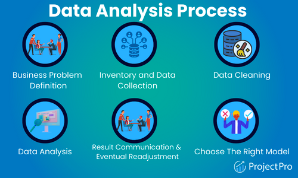
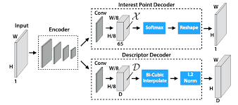

Data science is the study of data to extract meaningful insights for business
Data science is a multidisciplinary field that uses scientific methods, algorithms, and systems to extract knowledge and insights from data.
It combines techniques from statistics, mathematics, computer science, and domain expertise to analyze and interpret complex datasets.
The applications of data science span across various industries, including finance, healthcare, marketing, and technology.
Data scientist life cycle:
What exactly is Data Science?
Data Science is about data gathering, analysis and decision-making.
Data Science is about finding patterns in data, through analysis, and make future predictions.
By using Data Science, companies are able to make:
- Better decisions (should we choose A or B)
- Predictive analysis (what will happen next?)
- Pattern discoveries (find pattern, or maybe hidden information in the data)
Where is Data Science Needed?
Data Science can be applied in nearly every part of a business where data is available.
Examples are:
- Consumer goods
- Stock markets
- Industry
- Politics
- Logistic companies
- E-commerce
How Does a Data Scientist Work?
A Data Scientist requires expertise in several backgrounds:
- Machine Learning
- Statistics
- Programming (Python or R)
- Mathematics
- Databases
A Data Scientist must find patterns within the data. Before he/she can find the patterns, he/she must organize the data in a standard format.
Here is how a Data Scientist works:
- Ask the right questions - To understand the business problem.
- Explore and collect data - From database, web logs, customer feedback, etc.
- Extract the data - Transform the data to a standardized format.
- Clean the data - Remove erroneous values from the data.
- Find and replace missing values - Check for missing values and replace them with a suitable value (e.g. an average value).
- Normalize data - Scale the values in a practical range (e.g. 140 cm is smaller than 1,8 m. However, the number 140 is larger than 1,8. - so scaling is important).
- Analyze data, find patterns and make future predictions.
- Represent the result - Present the result with useful insights in a way the "company" can understand.
Example codes you can see on data science
import pandas as pd
data = pd.read_csv('data.csv')
print(data.head())
plt.plot(x, y)
model.fit(X_train, y_train)
To get started with data science, you'll need to have a basic understanding of statistics, programming, and data manipulation.
Here are some steps to help you begin your journey:
- Learn programming languages like Python or R.
- Understand basic statistics concepts such as mean, median, and standard deviation.
- Explore data manipulation techniques using libraries like Pandas.
- Practice by working on small projects or participating in online courses.
To learn become a data scientist, you need to have/learn the following skills
Some code samples you will get to farmiliarise on, starting with installing some packages
python3 script.py
npm install package-name
<div class="container">
#header { color: blue; }
SELECT * FROM table_name;
Data analysis is a crucial step in the data science process. It involves examining, cleaning, transforming, and modeling data to discover useful information, patterns, and insights.
Here are some common techniques used in data analysis:
- Exploratory Data Analysis (EDA)
- Data Cleaning and Preprocessing
- Feature Engineering
- Statistical Analysis
- Data Visualization
Why Is Data Analysis skills Important in data scince carrer path?
Data analysis plays a pivotal role in today's data-driven world.
It helps organizations harness the power of data, enabling them to make decisions, optimize processes, and gain a competitive edge.

Some Data Analytics code samples
df.describe()
df.dropna()
plt.hist(data)
from sklearn.model_selection import train_test_split
df.groupby('category').mean()
Machine learning is a subset of artificial intelligence that focuses on the development of algorithms that allow computers to learn and make predictions from data.
Key concepts and techniques in machine learning include:
- Supervised Learning
- Unsupervised Learning
- Reinforcement Learning
- Classification and Regression
- Clustering
- Neural Networks
- Support Vector Machines (SVM)
- Decision Trees
Real-world applications of Machine Learning include:
- Image recognition
Image recognition is a well-known and widespread example of machine learning in the real world.
It can identify an object as a digital image, based on the intensity of the pixels in black and white images or colour images.
Real-world examples of image recognition:
- Label an x-ray as cancerous or not
- Assign a name to a photographed face (aka “tagging” on social media)
- Recognise handwriting by segmenting a single letter into smaller images
Machine learning is also frequently used for facial recognition within an image. Using a database of people, the system can identify commonalities and match them to faces. This is often used in law enforcement.
Speech recognitions
Machine learning can translate speech into text.
Certain software applications can convert live voice and recorded speech into a text file.
The speech can be segmented by intensities on time-frequency bands as well.

Real-world examples of speech recognition:
- Voice search
- Voice dialling
- Appliance control
Some of the most common uses of speech recognition software are
devices like Google Home or Amazon Alexa. Medical diagnosis
Machine learning can help with the diagnosis of diseases.
Many physicians use chatbots with speech recognition capabilities to discern patterns in symptoms.
Real-world examples for medical diagnosis:
- Assisting in formulating a diagnosis or recommending a treatment option
- Oncology and pathology use machine learning to recognise cancerous tissue
- Analyse bodily fluids
In the case of rare diseases,the joint use of facial recognition software and machine learning helps scan patient photos and identify phenotypes that correlate with rare genetic diseases.
Statistical arbitrage
Arbitrage is an automated trading strategy that’s used in finance to manage a large volume of securities.
The strategy uses a trading algorithm to analyse a set of securities using economic variables and correlations.
Real-world examples of statistical arbitrage:
- Algorithmic trading which analyses a market microstructure
- Analyse large data sets
- Identify real-time arbitrage opportunities
Machine learning optimises the arbitrage strategy to enhance results.
Predictive analytics
Machine learning can classify available data into groups, which are then defined by rules set by analysts.
When the classification is complete, the analysts can calculate the probability of a fault.

Real-world examples of predictive analytics:
- Predicting whether a transaction is fraudulent or legitimate
- Improve prediction systems to calculate the possibility of fault
- Predictive analytics is one of the most promising examples of machine learning.
It’s applicable for everything; from product development to real estate pricing.
Extraction
Machine learning can extract structured information from unstructured data. Organisations amass huge volumes of data from customers.
A machine learning algorithm automates the process of annotating datasets for predictive analytics tools.

Real-world examples of extraction:
- Generate a model to predict vocal cord disorders
- Develop methods to prevent, diagnose, and treat the disorders
- Help physicians diagnose and treat problems quickly
Some machine-learning code samples
model = LinearRegression()
model.fit(X_train, y_train)
y_pred = model.predict(X_test)
from sklearn.metrics import accuracy_score
All the documentation in this page are taken from google search.
Here are some resources site for further reading: